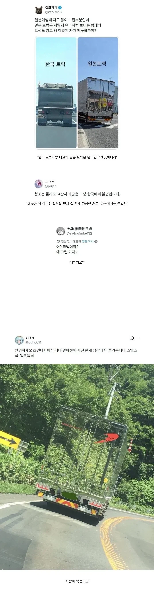

깨끗해보이는 일본 트럭의 진실
댓글
너도 미개하니까 괜찮아
네 다음 원종이
그건 그거대로 까고 이건 이거대로 까지 이 병신 원종이년아
딸배새끼들이 그러지 모든 운전자가 병신같이 운전하냐ㅋ
트럭을 저렇게 반사 되게 하는 건 일본도 불법일텐데?
다 좆까고
주차할 곳 없으면 내주면 안됨
공감이긴 한데 그러는 순간 화물노조 파업 들어감
지방 공도 포켓 = 대형 주차장
옷을 얼룩때 잔뜩 묻은걸 입고다녀라고 하면 입고다닐 한국인이 없는것처럼 일본애들은 자동차 위생 상태를 자신의 얼굴이라고 생각하더라, 트럭만 청결을 유지하는게 아니라 자가용도 전반적으로 깨끗함,
어시벌 이게 왜 불법이 아닌거지?
근데 크롬은 취향이니 그렇다 쳐도 렌트카 운전하면서 본 차들이 ㅈㄴ 깨끗하긴 했음
사이버트럭 저렇게 하는영상도있더라
닛뽄, 깨끗하다아아아앗!!!!
우리나라 트럭들은 번호판 좀 닦고 다녔으면 좋겠음
ㅈ같이 신호위반하고 끼어들기해서 신고하려하면
하나같이 번호판 안보이더라
그걸 위해서 더럽히고 다니는거임
일부러 그러는거야 ㅋㅋ
그러라고 그런건데 왜닦겠음
일본은 차량이 더러우면 안돼서 그렇다던데.
그래서 일본 도로에 돌아다니는 차량 보면 엄청 깨끗함.
근데 일본은 깨끗하기는 함. 일본가면 진짜 폐차감인 애들도 한국에서 굴러다님
애초에 덤프랑 카고를 비교하는게 맞냐. 운용환경 자체가 다른데.
매직미러임?
스텔스가 되네
원종이 새끼들 죄다 튀어나왔네
인생이 얼마나 꼬였으면 여기서도 원종이니 뭐니ㅋㅋ
진짜 원종이가 나오는걸 우짬?
쟤도 원종이임 ㅋㅋㅋㅋ
방수원종ㄷㄷ
아 네임드원종이야 ㅋㅋ?
야 니 검색해보니까 찐 원종 그자체네 ㅋㅋㅋ
뒤에서 상향등 켜면 반사되서 눈뽕 당하겠네
셀프눈뽕 자학하기
일본 트럭 병신같은건 차치하고 한국사람들 운전실력 너무 떨어짐 좀 정석대로 했으면
애초에 저런 일본 트럭들은 회사에 소속된 차량이라서 청소 깔끔하게 하고 다니고 정비도 잘함. 회사 광고판이나 마찬가지니까.
개인트럭은 보면 좀 독특함. 일본은 나라가 길쭉해서 그런가 트럭 한번 타고 나가면 길면 며칠동안 트럭에서 사는 경우가 많아서 그런가 트럭을 꽤 많이 꾸미더라. 장식물 같은거 붙이기도 하고.
근데 어쨌든 죄다 청소는 빡시게 함. 깔끔해.
운전문화 씹미개한데다가
빅딸배들 요소수안넣고 타이어씹창난거끼고다니고
1차선정속주행 길막에 신호위반 갈기는 병신나라에서
저걸욕할자격이잇냐